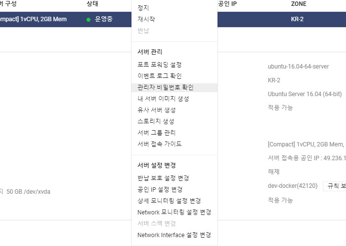
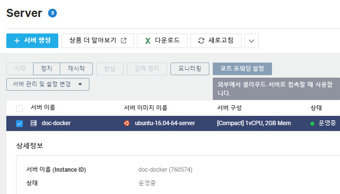

SSH 접속
서버를 생성한 뒤에 사용을 위해 리눅스 계열은 ssh로 접속을 해야한다.
ssh에 접속하기 위한 순서로는 관리자 비밀번호 확인 →
포트포워딩 설정 →
ACG 설정 →
ssh 접속의 과정을 거쳐야 한다.
먼저 관리자 비밀번호 확인을 위해 서버 목록에서 마우스 오른쪽 버튼 > 관리자 비밀번호 확인 메뉴를 선택한다.

마우스로 파일을 끌고 오거나 여기를 클릭하세요란 영역에 서버 생성시 저장한 인증키 파일을 드래그 앤 드롭한 뒤
비밀번호 확인 버튼을 클릭한다.
서버 root계정의 비밀번호를 확인할 수 있다.
이번에는 포트포워딩을 설정해야 한다. 생성한 서버에 고정IP가 할당되어 있다면 포트 포워딩 설정이 불필요 하지만
처음 서버 생성시에는 고정IP가 할당되어 있지 않고 서버 접속용 공인IP만 제공되므로 설정이 필요하다.
포트 포워딩 설정을 위해서는 서버목록 상단의 포트 포워딩 설정 버튼을 클릭한다.

외부 포트(1,024 ~ 655,534)를 지정해서 추가버튼을 클릭한여 적용시킨다.
마지막으로 ACG를 설정해서 22번포트의 외부접근을 허용해야 한다.
왼쪽 서브메뉴의 Server > ACG 메뉴를 선택하고 서버가 사용하고 있는 ACG를 선택한 뒤에 ACG 설정버튼을 클릭한다.
프로토콜:TCP, 접근소스:<접근허용IP>, 허용포트:22, 메모:<설명>을 입력하고 추가버튼을 클릭한다.
위의 과정을 모두 완료하면 접속을 위한 설정은 끝이다.
SSH접속 프로그램을 실행해서 host에는 서버접속용공인IP를 입력하고 port는 포트포워딩에서 설정한 외부포트(1024)를 입력해서 접속을 시도한다.
접속계정은 root고 비밀번호는 상단에서 확인한 비밀번호를 입력한다.
접속 완료 끝...